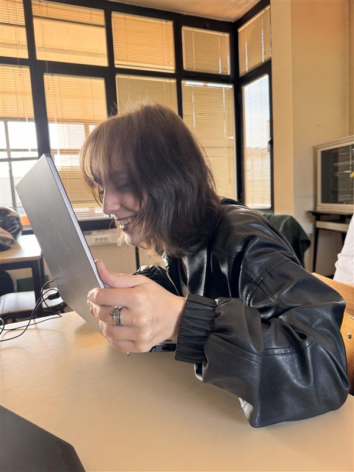

Especialista Sénior em Problemas Desnecessários
Beatriz Ribeiro
Responsável por identificar problemas que ninguém tinha notado. Com 0 anos de experiência, já causou mais de 47 problemas novos em apenas um semestre.
HTML
JavaScript
GitHub
Procrastinação

Diretora de Soluções que Criam Mais Problemas
Anastácia Sidorov
A única pessoa capaz de resolver um problema criando três novos. Responsável pelo design responsivo e por garantir que o site funciona em pelo menos um browser.
CSS
JavaScript
Responsividade
Stack Overflow

Chefe Executiva de Tudo
Elayne Nascimento
Fundador, CEO, estagiário e responsável pela impressora. Especialista em reuniões que podiam ter sido emails.
HTML
CSS
Git
Café